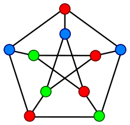

Backtracking is an algorithmic paradigm that tries different solutions until finds a solution that “works”. Problems which are typically solved using backtracking technique have following property in common. These problems can only be solved by trying every possible configuration and each configuration is tried only once.
Given an undirected graph and a number m, determine if the graph can be colored with at most m colors such that no two adjacent vertices of the graph are colored with same color. Here coloring of a graph means assignment of colors to all vertices.
1) A 2D array graph[V][V] where V is the number of vertices in graph and graph[V][V] is adjacency matrix representation of the graph. A value graph[i][j] is 1 if there is a direct edge from i to j, otherwise graph[i][j] is 0.
2) An integer m which is maximum number of colors that can be used.
Output: An array color[V] that should have numbers from 1 to m. color[i] should represent the color assigned to the ith vertex. The code should also return false if the graph cannot be colored with m colors.

Algorithm:
If all colors are assigned,
print vertex assigned colors
Else
a. Trying all possible colors, assign a color to the vertex
b. If color assignment is possible, recursivelty assign colors to next vertices
c. If color assignment is not possible, de-assign color, return False
Code:
def is_safe(n, graph, colors, c):
# Iterate trough adjacent vertices
# and check if the vertex color is different from c
for i in xrange(n):
if graph[n][i] and c == colors[i]: return False
return True
# n = vertex nb
def graphColoringUtil(graph, color_nb, colors, n):
# Check if all vertices are assigned a color
if color_nb+1 == n :
return True
# Trying differents color for the vertex n
for c in xrange(1, color_nb+1):
# Check if assignment of color c to n is possible
if is_safe(n, graph, colors, c):
# Assign color c to n
colors[n] = c
# Recursively assign colors to the rest of the vertices
if graphColoringUtil(graph, color_nb, colors, n+1): return True
# If there is no solution, remove color (BACKTRACK)
colors[n] = 0
We test the algorithm for the following graph and test whether it is 3 colorable:
(3)---(2)
| / |
| / |
| / |
(0)---(1)
#nb of vertex
vertex_nb = 4
# nb of colors
color_nb = 3
# Initiate vertex colors
colors = [0] * vertex_nb
graph = [
[0, 1, 1, 1],
[1, 0, 1, 0],
[1, 1, 0, 1],
[1, 0, 1, 0],
]
#beginning with vertex 0
if graphColoringUtil(graph, color_nb, colors, 0):
print colors
else:
print "No solutions"
[1, 2, 3, 2]
The solution corresponds to the following assignments:
1st node : color 1
2nd node : color 2
3rd node : color 3